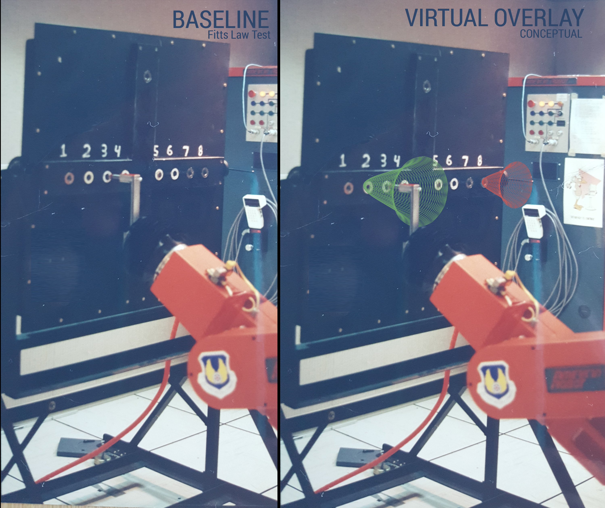
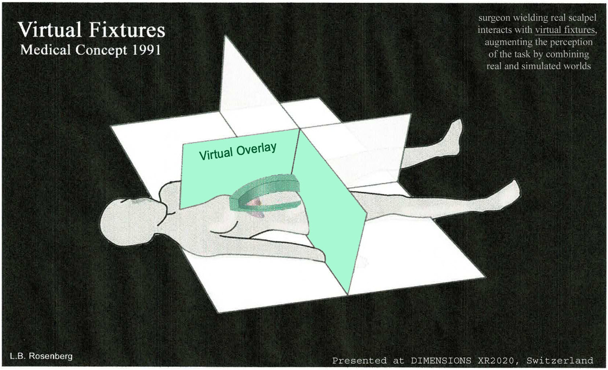

Virtual Fixtures
The first augmented reality system — a full upper-body exoskeleton that let you see and feel virtual objects registered in the real world

Overview
Virtual Fixtures was the first functional, immersive augmented reality system ever built. Developed in 1992 at Wright-Patterson Air Force Base by Louis Rosenberg, it overlaid virtual 3D objects onto a user's real-world environment and provided force feedback through a full upper-body exoskeleton — proving for the first time that computer-generated perceptual overlays could dramatically enhance human performance in dexterous manual tasks.
The core concept was elegantly physical: just as a ruler guides a pencil to draw a straight line, a 'virtual fixture' — a computer-generated surface or cone registered in 3D space — could guide a user's real hand movements with greater speed and accuracy than freehand work. Users wore an exoskeleton covered in sensors and motors, gripped a metal peg, and looked through binocular magnifiers suspended from the ceiling. In their view, virtual cones, barriers, and guide surfaces were overlaid on the real workspace. When their hand contacted a virtual surface, motors in the exoskeleton physically resisted — the sensation of bumping into a solid object that did not exist.
The project was pitched by Rosenberg to the Human Sensory Feedback Group of Armstrong Laboratory in 1991 while he was a Stanford doctoral candidate. The system filled half a room and used nearly $1 million worth of 1992-vintage hardware. Because computer graphics of the era were too slow to render photorealistic AR, Rosenberg devised an ingenious workaround: two real physical robots were controlled by the exoskeleton, and their live camera feeds were merged to create the spatially registered mixed-reality view. This was augmented reality before the term existed — Rosenberg called them 'perceptual overlays' added to a user's 'ambient reality.'
Deep dive
Louis Rosenberg was a doctoral student at Stanford's Center for Design Research in 1991 when he pitched the Virtual Fixtures concept to the USAF Armstrong Labs. The military motivation was teleoperation — controlling robots at a distance for hazardous tasks. But Rosenberg's insight was that virtual guides overlaid on the real workspace could make humans better at precision work than either humans alone or robots alone. He worked simultaneously across three institutions: Armstrong Labs (where the full system was assembled), NASA Ames (depth perception and vision research), and Stanford (VR gloves, immersive vision, 3D audio).
The upper-body exoskeleton was a mechanical framework covered in sensors, motors, gears, and bearings. It provided full 6-DOF tracking of the user's arms and hands, plus kinesthetic force feedback: motors physically pushed back when the user's hand contacted a virtual surface. Virtual fixtures rendered included rigid surfaces (preventing overshoot), guiding cones (funneling pegs into target holes), 'magnetically attractive' surfaces (peg snaps to alignment), textured surfaces with corresponding sounds, and viscous resistance — simulating pushing through 'virtual honey.' This was computational haptics combined with augmented vision years before either term was in common use.
Because 3D computer graphics in 1992 were far too primitive to produce photorealistic AR overlays, Rosenberg devised a workaround. The system used two physical robots controlled by the exoskeleton, with video cameras feeding a pair of binocular magnifiers. The optics were configured so the remote robot arms appeared registered at the exact location of the user's real arms. Virtual overlays were then merged into this pass-through video feed, creating the convincing illusion of virtual objects occupying real space. The cameras themselves were salvaged from a failed parachute test rig — six destroyed in a crash, and Rosenberg pieced together two working units from the wreckage.
The Fitts's Law peg-insertion tests produced the first empirical proof that AR could enhance real-world task performance — over 100% improvement in speed and dexterity. Rosenberg's 1992 technical report (AL-TR-0089) and 1993 IEEE VR paper established the conceptual framework for virtual guides and constraints still used today in robot-assisted surgery systems (da Vinci), satellite repair telerobotics, and hazardous-environment teleoperation. In 1993, Rosenberg founded Immersion Corporation to commercialize haptic feedback; Immersion's technology is now in most smartphones and gaming controllers. He holds over 300 patents and the Virtual Fixtures work is widely recognized as the origin point for both the modern AR industry and the consumer haptics industry.
Team & pioneers
- Louis Barry Rosenberg. Sole researcher and inventor. PhD candidate at Stanford during the project. Later founded Immersion Corp (1993), MicroScribe 3D (1996), Unanimous AI (2014). 300+ patents.
- Larry John Leifer. Rosenberg's PhD advisor at Stanford Center for Design Research.
- USAF Armstrong Labs. Human Sensory Feedback Group provided funding and facilities at Wright-Patterson AFB.
- NASA Ames Research Center. Advanced Displays and Spatial Perception Lab — Rosenberg conducted depth perception research here.
Media


Sources
- Rosenberg, 'The Use of Virtual Fixtures as Perceptual Overlays to Enhance Operator Performance in Remote Environments,' USAF AL-TR-0089, 1992
- Rosenberg, 'Virtual Fixtures: Perceptual Tools for Telerobotic Manipulation,' IEEE VR 1993
- Louis Rosenberg, 'How a Parachute Accident Helped Jump-start Augmented Reality,' IEEE Spectrum, 2022
- Wikipedia: Virtual Fixture
- Wikipedia: Louis B. Rosenberg
- Louis Rosenberg personal site: Virtual Fixtures (1991–1994)